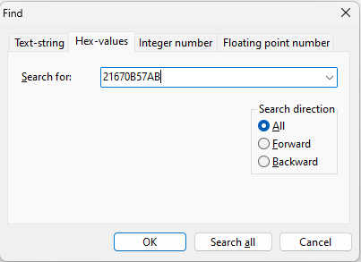

cdfbin
Where?
yourMod/Vehicles/Physics/Chassis/yourCar.cdfbin
file from AMS2cdfbin
Where?
yourMod/Vehicles/Physics/Chassis/yourCar.cdfbin
file with HxDcdfbin
Where?
yourMod/Vehicles/Physics/Chassis/yourCar.cdfbin
file related to the car you want to edit.Use Ctrl + F and set the search type to Hex-values and set the Search Direction to All. Then search for one of the following patterns:
22 67 0B 57 ABFloator 21 67 0B 57 ABWhat?
Afloat(short for floating‑point) is a data type used to represent numbers that have a decimal part. It stores numbers in scientific‑notation form (a mantissa plus an exponent) enabling a wide range of values with limited precision—typically around 6–7 decimal digits using 32‑bit (4 bytes) storage (IEEE 754 binary32)IntegerWhat?
Aninteger(or int) is a data type used to represent whole numbers—positive, negative, or zero—with no decimal part. In most systems, a 32‑bit integer can store values from −2,147,483,648 to 2,147,483,647.
These patterns may vary depending on the version of the file or vehicle.
After finding the correct pattern, locate the float value that represents the weight, which follows the pattern. Modify it accordingly.
48 42 00 00 = 50.0 KG
96 43 00 00 = 300.0 KG
After editing the value, go to File > Save or press Ctrl + S to save your modifications.